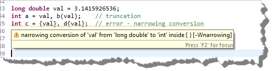

The names of classes and other programmer-defined data types
should begin with an uppercase letter, as in Alien or
Point3D.
Note that the class names in the standard C++ library do not
follow this convention, so that a class named Vector would be a
class that you created, but vector is the name of the class in
the standard C++ library.
Write named constants entirely in uppercase, as in PI or
HALF_DOLLAR. For constants, use the underscore character to mark
the word boundaries.
Variable: Initialization, Assignment and Scope
There are four different ways to initialize a variable in modern C++:
int a = 0; // assignment initialization
int b(3); // direct initialization
int c = {4}; // list initialization>
int d{5}; // also list initialization
The last two (using curly braces) are called list initialization,
and are only available in C++11, not earlier versions. A list
initialized variable is range-checked by the compiler when it is
initialized, and an error or warning is produced if the value is
too big for the variable. In other words, list initialization
allows stricter type checking— similar to that available in
Java or C#.
Here is what that looks like in MinGW (using the Eclipse IDE),
when I try to initialize a pair of
int variables (c and d)
with a long double variable val.

Other platforms (such as Visual C++ or Clang from OS-X) may issue
an error message instead of a warning like MinGW.
Changing Values with Assignment
To put a new value into an existing variable, you use the
assignment statement like this:
int run()
{
int sides = 7; // initialization
... // more code
sides = 10; // executable assignment statement
sides = {3.5}; // executable type-checked assignment
}
The assignment statement copies the value on its
right, and stores the copy in the named memory
location (the variable) on its left.
Technical Note : There are
two different uses of the assignment operator.
In the first line shown here, the assignment operator
should really be called the initialization
operator, because you are writing a definition or
declaration statement, not an executable assignment statement.
Executable assignment means giving a value to a variable that
already exists, not to provide an initial value to a newly
created variable. Executable assignment statements must
appear inside a method, while initialization statements
can occur outside a method when an instance variable is
defined. List-assignment, where the value to
be assigned is enclosed in braces, allows the compiler
to perform some additional type checking.
lvalues and rvalues
An lvalue is something that can appear on the left-hand-side of
an assignment operation. (The "el" stands for "left".) An rvalue
is something that may appear on the right-hand-side of an assignment..
Variables may be either lvalues or rvalues. For insance, these are
both legal expressions:
int x = 25; // lvalue
int y = x; // x is used as an r-value
Literals may only be rvalues, while constants are non-modifiable lvalues;
they can appear on the left in an initialization, but never afterwards.
In addition, some functions are lvalues, such as the at()
function used in the string class.
Variable Scope
When you create a variable, the rule that determines where that
variable is visible is called the variable scope. Scope just
means "where is this variable visible to my code?"
Most variables are declared within the body of a function (or
within a block inside a function). These are called local variables,
and their scope extends
- from the point of declaration
- to the end of the block in which they are declared
When the function is called, (or the block is entered), space for
each local variable is allocated for the duration of that function
call, and, when the function returns, (or the block is exited),
all its local variables are destroyed.
A variable declaration outside any function definition introduces
a global variable. A global variable is visible anywhere in the
remainder of the file in which it is declared. Global
variables are created when your program first starts running,
and they exist at the same location in memory until the program is
finished.
Global variables can be changed by any function
in a program, and it is difficult to keep those functions from
interfering with one another. Global variables may
sometimes seem tempting, your programs will be more
reliable if you avoid them.
Constants
Which of these two lines of code for calculating the total price
of a purchase are easier to understand?
Obviously, in the second instance, you have no hint as to
what the number .875 actually means; it might be a
tax, a markup, a surcharge, or something else. You might use a
comment to let readers know that you're adding the sales
tax, and that would certainly help.

Because there is no meaning associated with such "raw" numbers,
a reader unfamiliar with your code can't easily tell what the
literal number .875 means. For
this reason, such literals are often called magic numbers.
A comment won't help you, though, when the tax rate
changes from 8¾% to 7¼% (we can always hope,
huh?) and you have to change all of your programs. When that
happens, you'll find yourself searching through your source
code looking for the number .875 and asking yourself, "Is
this the sales-tax-rate, or something else?". You're also
likely to change some, and miss a few others.
Of course, those of you who passed the fifth grade on the first try
will point out that 8¾% is actually .0875,
not .875. But, that's the point!
If you use magic numbers in your code, then someone inspecting your
program doesn't know what the .875 means.
If you create a named constant, then a mistake like writing:
const double SALES_TAX_RATE = .875;
becomes much easier to catch.
Rather than using magic numbers, you should always
use constants. A constant is just like a variable,
(that is, it is a named storage area that holds a value),
but your compiler will prevents you from accidentally changing it
by assigning it a different value.
Defining Constants
To define a constant, you use the keyword const
as a modifier before the type name, and provide a value
by initializing it when you create it. (Since
constants can't be changed, you can't give it a
value later using the regular executable assignment operator.)
You can create local const
values or, if you want to use the same named constant inside
several different functions, you can create file-wide
constants. This is actually very common.
Integer Types
The integer types in C++ represent whole numbers.
In most cases, all you need to know is the type int, which
corresponds to the standard representation of an integer on the
computer system you are using. C++ allow you
to choose between four different integer sizes—short,
int, long and long
long—distinguished from each other by their range.
Unlike Java or C#, the C++ language does not specify an exact
range for these four types; instead, their range depends on the
machine and the compiler you're using. Here is what the language
guarantees:
- The size used cannot decrease as you move from
short to int to
long to long long.
On any given platform, short and int may be the same
size, but int can never be smaller than short.
int must use at least 2 bytes (16 bits) and be able to store
32,767 (215)-1.
long must use at least 4 bytes (32 bits), and be able to store
the value 2,147,483,647 (231)-1.
long long must use at least 8 bytes of storage (64 bits), and
be able to store 9,223,372,036,854,775,807 (263)-1.
For those of you coming from Java or C# the only thing you'll need
to look out for of is the use of long long
when you must have a 64-bit value (similar to Java's
long). It is very common for a C++ long and a
C++ int to have exactly the same size. Also, you
should note that long long was added in C++11, and may not be
available in earlier versions of C++.
Unsigned Types
In C++, (unlike Java), each of the integer types may be preceded by the keyword modifier
unsigned. Adding unsigned creates a new data type in which no
negative values are allowed.
Unsigned values also offer twice the range of positive values
when compared to their signed counterparts. On modern machines,
for example, the maximum value of type int is typically
2,147,483,647, but the maximum value of type unsigned int is
4,294,967,295. C++ allows the type unsigned int to be
abbreviated to unsigned, and most programmers who use this type
tend to follow this practice.
Here are some combinations possible:
int a; // signed int
unsigned int b; // unsigned int
unsigned c; // also unsigned int
short int d; // signed short int
short e; // also signed short int
unsigned short f; // unsigned short int
long g; // a signed long int
unsigned long h; // unsigned long int
long long i; // signed long long int
unsigned long long j; // unsigned long long int
Integer Literals
An integer literal is written as a sequence of decimal
(base 10) digits, with no spaces or commas allowed. However:
- If the number begins with the digit 0, then the compiler
interprets the value as an octal (base 8) integer. The
literal 040 is an octal number and represents the
value 32 in decimal.
- If you begin a literal with the characters 0x, the
compiler interprets the number as hexadecimal
(base 16). The literal 0xFF is equivalent
to the decimal value 255.
- In C++ 14 you can begin a literal with the characters 0b,
and the compiler interprets the number as binary
(base 2). The literal 0b101 is equivalent
to the decimal value 5.
- You can explicitly indicate that an integer literal is of type
long by adding the letter L at the end of the digit sequence, or
LL to indicate type long long. Thus, the literal
0L is equal to zero, but the value is explicitly of type long,
while 0LL is of type long long.
- Similarly, if you use the letter U as a suffix, the literal is
taken to be unsigned.
- Finally, in C++ 14 you can use the ' symbol as a visual
separator in your literal values. For instance, in C++ 14 you could write
int num = 1'234; and it would be interpreted correctly.
You can combine these different notations:
15; // signed decimal int literal
15L; // long signed decimal literal l5
15LL; // long long signed decimal literal
15ULL; // unsigned long long decimal literal
015ULL; // unsigned long long octal literal
0X15ULL; // unsigned long long hexadecimal literal
Fixed-Width Integers
Because the C++ language does not define a precise size for
each integral type, interfacing with different APIs that
require a specific type presents special challenges. C++ 11 attempts
to make this a little easier by introducing fixed-width
integral types in the new header <cstdint>.
Here are some examples:
int32_t; // signed decimal 32-bit int
int64_t; // signed decimal 64-bit int
uint32_t; // unsigned decimal 32-bit int
Floating-point Types
Numbers that include a decimal fraction are called floating-point
numbers, which are used to approximate real numbers in
mathematics. As with integers, the C++ standard does not define
an exact representation for these types.
C++ defines three different floating-point types:
- float is a single precision
floating point number. Usually an IEEE-754 32 bit floating point type
with a range from += 1.4E-45 to
3.4E+38 and a precision of about 7
significant digits.
- double is a double precision
floating point type. Usually implemented as an IEEE-754 64 bit
floating point type with a range of += 4.94E-324
to 1.79E+308 and a precision of about 16
significant digits.
- long double is an extended precision
floating point type. Not necessarily an IEEE-754 type. Usually
and 80-bit x87 floating point type on x86 and x86-64 architectures.
Floating-point types support some special values:
- infinity. Example: 1.0/0.0 == infinity
- negative zero. Example: 1.0/-0.0 == -infinity
- NaN. Not-a-Number which does not
compare equal with anything (including itself).
Unless you are doing exacting scientific calculation, the
differences between these types will not make a great deal of
difference; unless you have a very specific reason to do
otherwise, use double rather than
float as your standard floating-point type.
Floating Point Literals
Floating-point literals in C++ are written in two ways:
- With a decimal point and fixed-point notation (eg.
2.0). The literal is stored
internally as a
double.
- Using a form of scientific notation (eg.
2.9979E+8 to represent the
speed of light, instead of writing it as
299790000.) The exponent
can be positive or negative and you can use an
uppercase or lowercase "E".
You can change the storage class of your literals
by appending an F for type float
and an L for a type of
long double. Here are some examples.
.2; // double, fixed notation
2.3; // double, fixed
2.3L; // long double, fixed
2.3F; // float, fixed
2.3e-7F; // float, exponential notation
Expressions and Operators
An expression is any combination of
operators and
operands which, when evaluated, yields a value.
Arithmetic Operators
Here are the five most used basic arithmetic operators that can
be applied to any numeric type. Each of these is a binary operator:
| Operator |
Meaning |
| + |
Addition (or unary plus) |
| - |
Subtraction (or unary minus) |
| * |
Multiplication |
| / |
Division (both integer and floating-point) |
| % |
Remainder or modulus (both integer and floating-point) |
The Results
When operators and operands are combined, each operator
is applied to its operands, and a temporary value is
calculated and stored in memory. Here's an example:
cout << 10 + 1 <<endl;
This expression uses two literal operands as well as the
addition (or binary plus) operator. This expression
produces or creates the temporary value 11.
The value produced by the expression can be used wherever a
literal value can be used.
Much of the time, a temporary value is all you need. If you
need to store the result of an expression, however, you
can use assignment operator to copy the temporary
value into a variable.
Side-Effect Operators
When you use the addition operator to add two numbers together, like this:
int sum = num1 + num2;
the operands, num1 and num2,
are not changed at all; the variable sum, which
stores the results of the calculation, is changed,
however. This kind of change is called a side effect.
The assignment operator produces
a side effect, as do the increment and decrement
operators, and the various shorthand assignment operators.
Chained Assignment
The assignment operator copies the value on its right into
the variable on its right, producing a value in the
process. The variable on the left is modified; this is a
side effect. (Of course, most of us use the assignment
operator only for this side effect and don't give much
thought to the value that is produced.)
Assignment first evaluates the expression on its right
before copying it to the variable, so assignment is right associative.
Because of that, we can "chain" assignment statements together like this:
x = y = z = 10;
This expression first applies the assignment operation to the
variable z, copying the value 10 into the variable.
The expression z = 10 produces a value, (10),
which is used as the right-hand operand in the next assignment,
where 10 is copied into y. In the same way,
assigning 10 to y produces a value (10),
and that value is used as the right-hand operand for the final
assignment to x.
Shorthand Assignment
Many times, when you perform an operation on
a variable, you store the result of that operation right back
in the same variable. What you really want to modify an existing
variable, the shorthand-assignment operators give us a concise way to
do that.
There are shorthand assignment operators corresponding to
most of the basic numeric operators. Here is what each of
them mean:
| Original |
Shorthand |
| a = a + b |
a += b; |
| a = a - b |
a -= b; |
| a = a / b |
a /= b; |
| a = a * b |
a *= b; |
| a = a % b |
a %= b; |
Increment and Decrement
A common operation is to add or subtract one from a
variable and then store the result back into the same variable.
This is called incrementing or, (when subtracting),
decrementing the variable.
The increment (++) and decrement (--)
operators are unary operators that can only be
applied to a variable; you can't use them with literals,
constants, or method calls.
You may place the operator either before or after the
variable. Here's an example:
int a = 5, b = 10;
a++; // a is changed to 6
--b; // b is changed to 9
Pre and Post
In addition to this side effect, the increment operator also
produces a value, which has some interesting properties.
When placed before the variable, it is called a pre-increment
(or decrement, depending upon the operator) expression. When
placed after the variable, it is called a post-increment
(or decrement) expression.
As far as the side effect is concerned it doesn't make a bit
of difference whether the operator is placed in front
of, or after, a variable. In both cases, the variable is
left holding a value one greater (or less) than it was before.
The expression value produced by an increment or decrement, however,
depends on whether it is a post or pre expression.
int a = 5, b = 10, c, d;
c = a++; // a is changed to 6, but c is assigned 5
d = --b; // b is changed to 9 and that is assigned to d
In pre-increment (decrement), the variable is first modified
and the result of the expression is the new (or expression) value.
In post-increment (decrement), the value of the expression is
the value the variable had before it was changed.
Mixed-Type Operations
Not all expressions involve integers.
You can also have expressions using floating-point numbers,
characters, and strings. You can even have
expressions that involve all of the above.
Since every expression produces a value, and each value
produced by an expression has a particular type. When you add
or subtract two integers, the result is an integer; when you add or
subtract two floating-point numbers, it is a floating point number.
Simple, but what if....
a = 5 * 3.0;
Now we've got a problem. What should the computer do? It has
no built in capability for multiplying floating-point numbers and
integers.
When C++ encounters an expression that uses different
types of operands, it first determines the most precise of the
operands using this data hierarchy. Then, it creates temporary,
unnamed variables of the most precise type, initializing those
temporary variables using the less-precise values. This
process is called promotion or, a widening
conversion.
Let's look at our example again. Of our two values, 5
and 3.0, 3.0 has greater precision—it is higher
in the data hierarchy. To perform the calculation, C++
creates an unnamed temporary double variable
that contains 5.0, to take the place of the
int value 5 during the calculation.
The int value 5 is not changed in any way
by this.
Finally, the multiplication is performed using the
double values 3.0 and 5.0 and the
result is the double value 15.0.
Assignment and Mixed Expressions
What actual values is stored in the variable a in the
previous example? It depends on the type of a. If the
variable is any type other than double (the result of
the expression), it will be implicitly converted
or coerced into the same type as the variable.
- Widening conversions occur when the
assignment causes a promotion, such as from int to
double. In Java and C# these are the only kind of
implicit conversions allowed.
- Narrowing conversions occur when the
assignment has the potential for loosing information, such
as assigning from double to int. Such
assignments are prohibited in Java and C#, but are permitted
in C++.
To turn off implicit narrowing conversions, C++11 added brace
assignment; this makes C++ work more like Java/C#.
int a = 5 * 3.1; // 16
int b = {5 * 3.1}; // error in C++11
Type casts
In C++, you specify explicit conversion by using
a type cast, which converts from
one type to another. There are three legal ways to write a type
cast in C++: C-style, functional-style
and standard or new-style.
You should generally use the new style casts. Here's an example.
int num = 7, denom = 5;
double fract1 = num / denom; // oops! fract1 holds 0.0
double fract2 = static_cast<double>(num) / denom;
- num and denom are both integers
- fract1 is a double, but the calculation
is done using integers. That means that fract1
is assigned the value 1.0.
- The static_cast creates a temporary
double value to "stand in" for num,
and so floating-point division is performed instead of
integer division.
There are four of these new-style casts:
- static_cast converts from one
primitive type to another. This is the one you'll use
99% of the time.
- const_cast is used when you
want to make a constant into a changeable variable.
Of course this only works on variables, not literals.
- dynamic_cast is used for
certain kinds of polymorphism, in object-oriented programming.
- reinterpret_cast changes what a
pointer points to.

Bjarne Stroustrup, (the inventor of C++)
has several convincing reasons why you should use these
new-style casts on his C++ FAQ.
Older Casts
C-style casts are written by putting the desired type in
parentheses in front of the value you wish to convert. For
instance, (int) 3.5 casts the
double value 3.5 to the int value
3 by truncating the fractional portion.
Writing (double) 3 converts the int value
3 to 3.0. If you've taken Java or C# you'll
recognize this casting style.
In pre-standard C++, functional style casts were introduced to
appear more like making a function call and to normalize the
casting convention between user-defined types and the built-in
primitive types. In this style, the name of the desired type is
followed by the value you wish to convert in parentheses. You
would write the previous example like this: int(3.5).
If you've taken Python, you're probably familiar with this
casting style.
Using cin & cout
The global variables cin (of library class istream)
and cout (of library class ostream) are automatically
created when you include iostream. By default they are connected
to your operating system's standard input and standard output. Practically
that means that cin is connected to the keyboard, and cout
is connected to the screen.
Output with cout
Here are the standard ostream operations:
- Formatted output converts the value to be displayed to its text representation.
- Unformatted output prints individual characters.
cout << 65; // formatted output "65"
cout.put(65); // unformatted output 'A'
While there are other, more specialized functions, these are what you'll normally use.
Input with cin
There are three kinds of input operations:
- Formatted input where the text input read from the stream is
converted to values of different types before being stored in a variable.
- Unformatted character-oriented input, where individual characters
are read, one at a time.
- Line-oriented input where lines of text are read and stored into
string variables.
Manipulating Input and Output
Formatted output may be manipulated on its ultimate way to its destination. You do
this by adding #include <iomanip> along with the
regular streams header. Then, insert one of the manipulators in front of the
value you want to change.
- fixed forces floating-point numbers to use fixed-point
notation insead of scientific. scientific does the opposite.
- setprecision(2) causes floating-point numbers to show two
decimal places. Usually used along with fixed.
- setw(20) forces the next, and only the next,
input value to be printed inside a field or column 20 spaces wide.
- left and right control
which side the fill characters are added to when printing in columns.
- setfill('0') causes any columns to use the specified
character (the '0' in this case) instead of spaces for padding.
- boolalpha and noboolalpha controls whether
bool values are printed or input using
integers or true and false.
- ws and nows controls whether cin skips white spaces
when doing formatted input.
The string Library Type
The C++ string library type allows you to work
with sequences of individual characters. To use strings in your programs, add
#include <string>
using namespace std;
Constructing string Objects
You can create string objects in several ways:
string s1;
string s2 = "Hello";
string s3("World");
string s4("Hello World", 6, 5);
string s5("Hello World", 0, 5);
string s6(20, '-');
string s7 = R"(raw with \ and ")";
This produces the following strings when printed.
s1->
s2->Hello
s3->World
s4->World
s5->Hello
s6->--------------------
s7->raw with \ and "
The link has more possible constructors. Let me touch on the ones shown here.
- Produces the empty string, not the null string as in Java.
- Implicitly converts a character array to a string object.
- Explicityly converts a character array to a string object
- Converts a slice of an array to a string object
- Converts a different slice
- Produces a string made of 20 '-' characters.
- Produces a string object from a raw string literal.
String Operations
The library overloads several operators to work with string objects.
These are:
- Concatenation: the + sign concatenates (joins together)
two string objects to produce a third. Neither string
is modified.
- You cannot concatenate string objects and numbers as you can in Java.
- You may concatenate char values to a string object.
- You cannot concatenate two string literals: "a" + "b" is illegal.
However, you can concatenate string literals
simply by separating them with whitespace. So "a" "b" would be legal
and would be concatenated. Usually this is used to join long lines together
in your source code.
- Modifying Concatenation: you can use the += as long as the left-hand side is
a string object.
- Comparison: use the relational operators to compare string objects, instead
of the equals() and compareTo() methods as in Java.
- Assignment: assigning one string object to another creates a separate
copy, not an alias or reference, as in Java. In this case, the behavior of string
objects is just like the built-in types, such as int.
- Subscripting: using [ ] with a string object allows you
to read and write individual characters, just as if it were an array. Unlike Java,
C++ string objects may be modified in this way. NOTE, unlike
Java, characters accessed by [ ] are not range checked. If your index
is out of bounds, the result is undefined.
String Member Functions
Here are the member functions that I've found most useful. None of these
require the user of iterators. Use the supplied link to see all of them.
- size() or length() returns the number of characters in
the string as a string::size_type value. Use size_t
for this unsigned integer type.
- empty() returns true if the string is empty.
- at() allows you to select a character exactly like
the [ ] subscript operator does, except at() is
range checked. Use it on the left or right of an assignment operator.
- front() and back() access the
first and last character (C++11). Range checked.
- substr(pos) allows you to select a substring
from an existing string starting at index pos. This is
range checked. substr(pos, len) constructs a new string
consisting of (at most) len characters, starting at
pos from a string. No error if there are not len
characters left; you get what is there.
- clear() erases the contents of a string.
- find(subs) finds the first occurrence of a the substring
subs, while rfind(subs) finds the last. If
subs is not in the string, the value string::npos
is returned.
- While find(subs) returns the first occurence of subs,
the find_first_of(str) returns the position of the first
occurence of any of the characters in str. Similarly
find_first_not_of(str) finds the first character that is not
is str. There are two rfind??? versions as well.
Many of the functions you are familiar with in the Java String class
are missing here, or work differently. For instance, there is no
toLowerCase() function. Similarly, many of Java's builder
functions, like replace() are much more complex in C++ because
the string objects are changed.